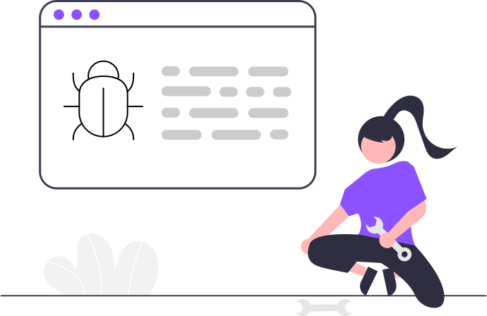
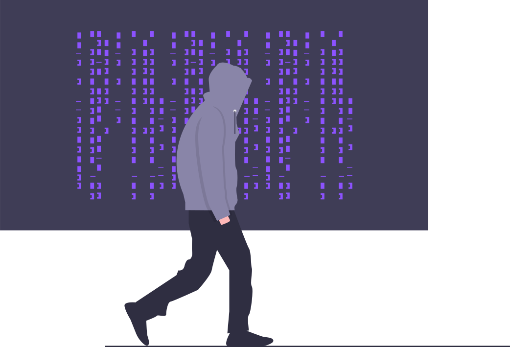

Gestión de Vulnerabilidades
Es un servicio esencial para asegurar la infraestructura tecnológica empresarial. Va más allá de evaluaciones básicas, abordando identificación, análisis y mitigación continua de debilidades en redes y sistemas. Involucra escaneos regulares, análisis exhaustivos, recomendaciones detalladas y asesoramiento continuo para garantizar la seguridad.
Auditoría de Entornos Cloud

Es un servicio clave que garantiza la seguridad de los datos almacenados en la nube. Se enfoca en evaluar minuciosamente la seguridad de los sistemas en la nube, identificando vulnerabilidades y riesgos potenciales. Proporciona un informe detallado con recomendaciones específicas para mejorar la seguridad en la nube y prevenir amenazas. Este servicio permite tomar medidas preventivas y fortalecer la ciberseguridad de los activos en la nube de manera proactiva.
Auditoría de Código y Seguridad en el Ciclo de Vida del Desarrollo
Es un servicio esencial para garantizar la seguridad cibernética desde las primeras etapas del desarrollo. Se centra en asegurar de manera integral los activos digitales durante todo el ciclo de desarrollo del proyecto, desde el diseño hasta su implementación final. Proporciona una identificación temprana de riesgos al detectar y corregir fallas en el código antes de la producción, integrando controles de seguridad en herramientas de automatización y asegurando la conformidad con reconocidos estándares de seguridad. Además, contribuye a fortalecer la reputación de los clientes al demostrar su compromiso con la seguridad y al cumplir con estrictos estándares de la industria, como ISO/IEC 27001 y OWASP.
Pentesting y Seguridad en la Web
Es un análisis de vulnerabilidades en aplicaciones web esencial para asegurar la fortaleza de un sitio en el ciberespacio. Este servicio implica una evaluación integral de la aplicación web por un equipo altamente calificado, identificando posibles vulnerabilidades y debilidades. Tras la evaluación, se entregan recomendaciones concretas sobre cómo abordar y corregir las vulnerabilidades identificadas, junto con la posibilidad de re-testeos para verificar las mejoras implementadas.
Monitoreo de Ciberseguridad Automático

El Monitoreo de Ciberseguridad Automático ofrece una solución innovadora y asequible para evaluar el perímetro de seguridad empresarial. Permite un registro sencillo en su portal y proporciona un análisis inmediato utilizando avanzadas herramientas de ciberseguridad. La suscripción avanzada incluye escaneos recurrentes, informes mensuales detallados y un distintivo de seguridad para mostrar el compromiso con la ciberseguridad en el sitio web.